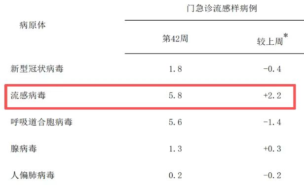
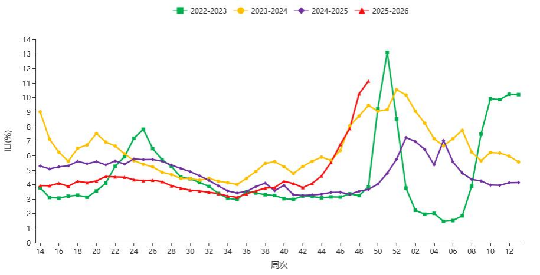
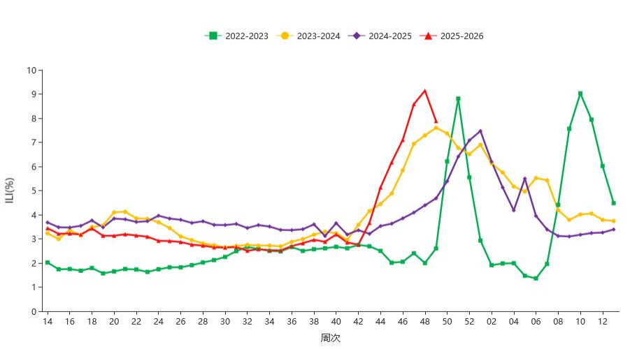
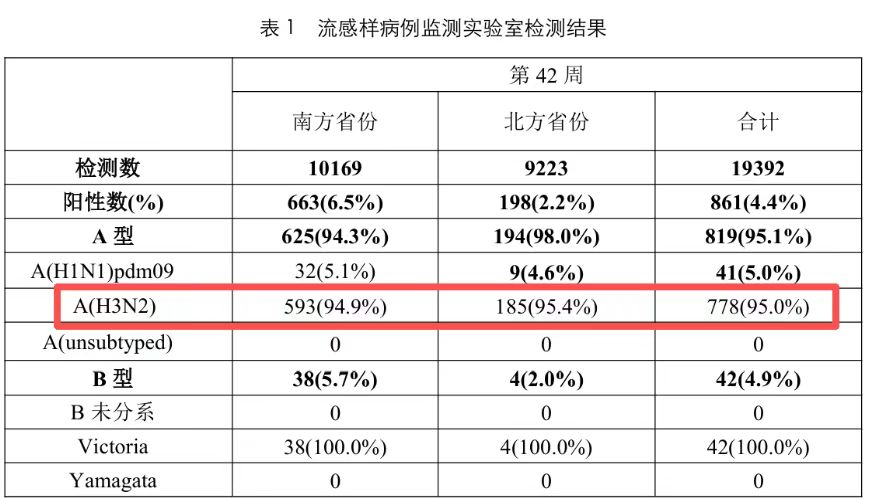
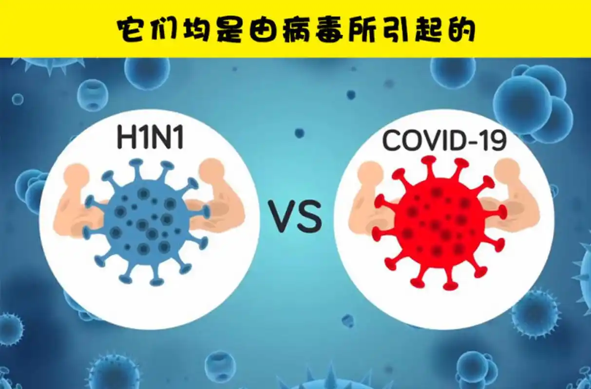
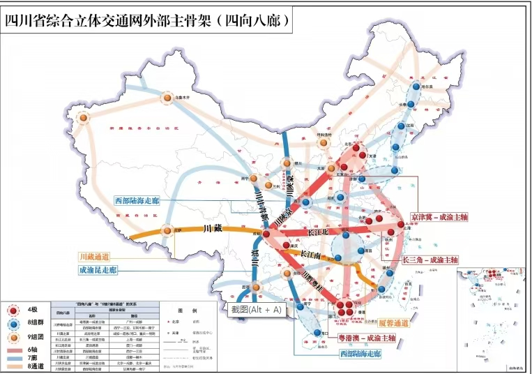
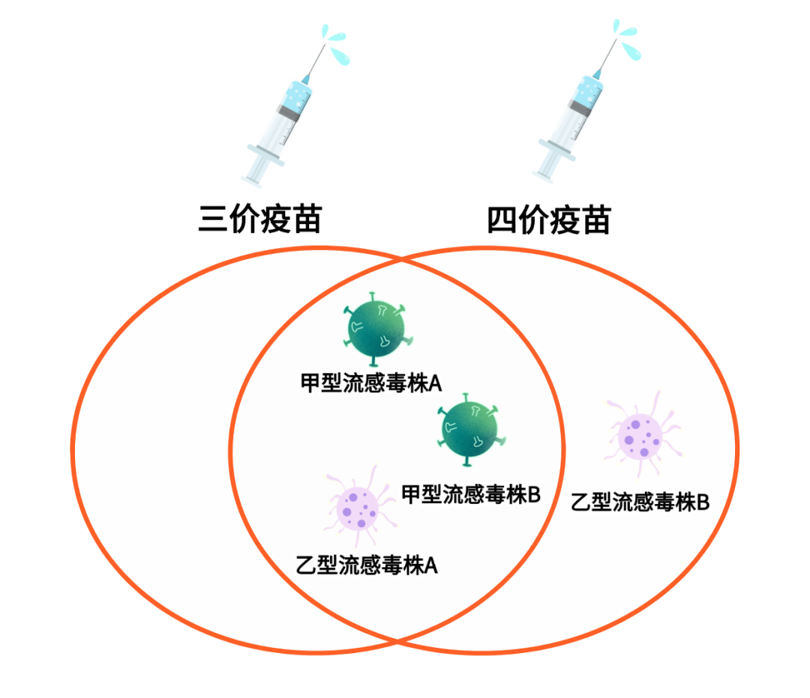

根据中国疾病预防控制中心发布的2025年第42周《全国急性呼吸道传染病哨点监测情况》显示，2025年10月13日-10月19日哨点医院门急诊流感样病例呼吸道样本检测阳性率跟上一周相比增加了2.2%，是同期其他呼吸道传染病毒(如新冠病毒、呼吸道合胞病毒、腺病毒、鼻病毒等)增加最多的。
数据来源：中国疾病预防控制中心
根据中国疾病预防控制中心发布的2025年第42周《全国急性呼吸道传染病哨点监测情况》显示，2025年10月13日-10月19日哨点医院门急诊流感样病例呼吸道样本检测阳性率跟上一周相比增加了2.2%，是同期其他呼吸道传染病毒(如新冠病毒、呼吸道合胞病毒、腺病毒、鼻病毒等)增加最多的。


2025 年第 49 周（2025 年 12 月 1 日－2025 年 12 月 7 日），南方省份哨点医院报告的 ILI%为 11.1%， 高于前一周水平（10.3%），高于 2022 年、2023 年和 2024 年同期水平（3.9%、9.5%和 3.7%）。
2025 年第 49 周，北方省份哨点医院报告的ILI%为 7.9%，低于前一周水平（9.1%），高于 2022 年、 2023 年和 2024 年同期水平（2.6%、7.6%和 4.7%）。

| 症状 | 第1天 | 第2天 | 第3天 | 第4天 | 第5天 | 第6天 | 第7天 |
|---|---|---|---|---|---|---|---|
| 头痛 肌肉 乏力 |
较轻 | 加重 | 剧烈 | 开始 好转 |
仍有 症状 |
减轻 | 明显 好转 |
| 咳嗽 干咳 |
轻微 | 较轻 | 较轻 | 加重 | 症状 明显 |
症状 持续 |
症状 持续 |
| 咽干 咽痛 |
轻微 | 较轻 | 较轻 | 加重 | 症状 明显 |
症状 持续 |
症状 持续 |
| 总体 感受 |
轻微 不适 |
症状 加重 |
症状 较重 |
症状 较重 |
开始 好转 |
持续 好转 |
明显 好转 |
流感是由流感病毒引起的急性呼吸道传染病，通常分为甲乙丙丁四种类型，其中甲型和乙型最常见。流感最主要的特点就是“急”，它和普通感冒相比具有：
| 流感 | 普通感冒 | |
|---|---|---|
| 致病原 | 流感病毒 | 鼻病毒、冠状病毒等 |
| 流感病原学检测 | 阳性 | 阴性 |
| 传染性 | 强 | 弱 |
| 发病的季节性 | 有明显季节性 （我国北方为10月至次年3月多发） |
季节性不明显 |
| 发热程度 | 多高热(39-40℃) 可伴寒颤 |
不发热或轻、中度热 无寒颤 |
| 持续时间 | 3-5 天 | 1-2 天 |
| 全身症状 | 重，头痛、全身肌肉酸痛、乏力 | 轻或无 |
| 病程 | 5-10 天 | 5-7天 |
| 并发症 | 可合并肺炎、中耳炎 | 少见 |
流感病毒本就是不断变化的，就以甲流为例，不管是去年主打的H1N1毒株，还是今年的主角H3N2，都只是甲流家族中的一个成员而已，其他成员还包括H5N1，H6、H7等。
再说了，大家不要搞忘流感还有一个“主角”叫乙流，在整个流感流行季中，甲流和乙流是有可能同时或者交替流行的。

根据中国疾病预防控制中心最新发布的流感监测周报(10月13日-10月19日)来看，流感在南方省份活动明显增强，且今年流行毒株与去年不同，以甲型H3N2Q为主(去年流行的主要毒株是甲型H1N1)。
这一变化带来的关键问题是:大众对今年流行的甲型H3N2毒株的免疫力普遍较低，可能导致大家更容易感染。
H3N2和H1N1引起的症状非常相似，都属于典型的流感症状，存在细微的与个体有关的倾向性差异。
共同的核心症状主要是这些：高烧（39°C以上很常见）、全身肌肉酸痛、乏力、头痛、咳嗽、喉咙痛、部分患者有胃肠道不适（如恶心、腹泻，但在儿童中更常见）。
2024-2025年冬季气温异常波动，多地出现“暖冬”现象，同时空气湿度较低，这种气候条件有利于甲流病毒的传播和存活。
研究显示，甲流病毒在5-20℃、相对湿度低于40%的环境中存活时间可延长3-5倍，显著增加了传播风险。
由于前几年疫情防控措施的影响，人群自然感染甲流的机会减少，导致群体免疫力下降。同时，疫苗接种率不足也是重要因素。
2024年全国甲流疫苗接种率仅为18.5%，远低于世界卫生组织建议的40%以上水平。
＜5岁的儿童
＞65岁的老年人：伴有以下疾病或者状况者：慢性呼吸系统疾病、心血管系统疾病、慢性肾脏疾病、肝病、血液系统疾病、糖尿病、肿瘤性疾病、免疫抑制等
肥胖者
妊娠及围产期女性
甲流病毒的跨区域传播，本质上是一场“人与病毒的地理迁徙”。研究表明，人口流动在疫情初期能显著加速病毒扩散，而交通枢纽则是病毒传播的关键节点。


2025年甲流疫情中，浙江、广东、四川等交通枢纽密集、人口流动频繁的省份，均报告了多起聚集性疫情。
春节、国庆等假期的大规模人口流动，让病毒从疫情高发区扩散到周边城市乃至偏远地区，形成“核心城市辐射传播”的格局。特别是西南地区，作为2025年甲流暴发疫情最多的区域，其复杂的交通网络和频繁的省际流动，成为疫情扩散的重要推手。
2025年冬季接诊数据• 接诊时间：2025年10月25日-12月15日。
接诊总量：儿科门诊接诊流感样病例18720例，较2024年同期增长42%；其中确诊甲流病例12450例，占流感样病例的66.5%。
年龄分布：0-3岁婴幼儿占甲流确诊病例的71%（8839例），3-6岁幼儿占22%（2739例），6岁以上儿童占7%（872例）。
症状表现：92%的患儿出现高热（39℃以上）、咳嗽、咽痛；12%的患儿伴随呕吐、腹泻；3%的患儿发展为肺炎、中耳炎等并发症，无死亡病例
特点：2025年冬季甲流呈现低龄化、症状重、传播快特点，根据中国疾控中心监测显示，目前我国南方省份流感活动上升。10月30日，四川省疾病预防控制中心发布提醒，目前四川已进入流感流行期，主要流行毒株为甲型H3N2流感病毒。

目前我国可供接种的流感疫苗主要有以下三种类型：
而我们常说的流感疫苗“三价”和“四价”是指疫苗覆盖的流感病毒数量，并不是疫苗的类型，即三价疫苗包含两种甲型流感毒株和一种乙型流感毒株。四价疫苗则在此基础上再多覆盖一种乙型流感毒株。其中灭活疫苗是需要注射的那种，减毒活疫苗主要就是鼻喷的那种，给药途径是通过鼻子吸入，主要用于3-17岁的孩子。
针对毒株的变更，医生提醒大众切勿惊慌，从病毒的“攻击结果”来看，只要是流感，结果都差不多。
秋冬季节是流感等呼吸道传染病高发季，接种流感疫苗是预防和控制流感的有效措施。《中国流感疫苗预防接种技术指南（2023—2024）》明确推荐所有≥6月龄且无接种禁忌的人群进行接种。医生建议，在每年的9-11月接种流感疫苗，特别是老年人、儿童、慢性病患者等高危人群。从接种到产生抗体大概需要2-4周，所以要提前打疫苗才能起到最佳效果。
流感疫苗的保护效力通常在40%-70%左右，无法完全杜绝感染。即使疫苗与流行毒株匹配，仍有一定概率感染。但是已经有大量科学研究结果证明，接种后即使仍然感染了流感，症状也通常较轻，病程更短，重症风险也是显著降低的。
需要特别强调的是 现有的三价和四价流感疫苗 对今年流行的H3N2都是有效的！
早期使用抗病毒药物至关重要：
高危人群包括：65岁以上老年人、5岁以下儿童、孕妇、慢性病患者、免疫功能低下者等。
| 品名 | 奥司他韦 | 玛巴洛沙韦 |
|---|---|---|
| 适应症 | 成人及1岁及以上儿童甲、乙型流感的治疗；13岁及以上人群的甲型和乙型流感预防 | 成人和5岁及以上儿童单纯性甲型和乙型流感患者；或存在流感相关并发症高风险的成人和12岁及以上儿童流感患者 |
| 用法用量 | 治疗：每日两次，连吃5天；预防：每日一次，连用7-10天 | 仅需一次，按体重服药 |
| 不良反应 | 恶心、呕吐、头痛和疼痛 | 恶心呕吐较奥司他韦轻，偶见超敏反应、皮疹或荨麻疹，极少数出现精神系统症状 |
| 特殊人群 | 1岁及以上儿童可用；妊娠、哺乳期妇女可用；老年人无需调整剂量 | 5岁及以上儿童可用；妊娠、哺乳期妇女不建议使用；老年人无需调整剂量 |
| 起效速度 | 相对较慢 | 通常更快 |